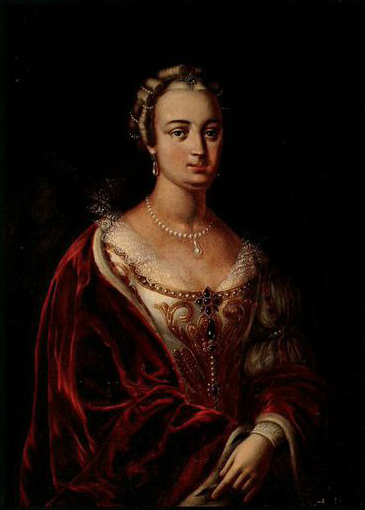

Францішка Урсула Радзівіл (1705 — 1753)
Спадчынніца і княгіня
Францішка паходзіла з магутнага роду Вішнявецкіх і атрымала бліскучую адукацыю, валодала некалькімі мовамі і мела глыбокія веды ў сусветнай літаратуры. Стаўшы жонкай Міхала Казіміра Радзівіла «Рыбанькі», яна не проста падзяліла з ім уладу над Нясвіжам, але і стала яго галоўным духоўным паплечнікам. Менавіта яе энергія і талент дапамаглі адрадзіць былую веліч Нясвіжскага замка пасля шматлікіх войнаў.
Чым яна вядомая і яе культурны ўклад:
- Заснаванне Нясвіжскага тэатра: У 1746 годзе Францішка арганізавала ў Нясвіжы пастаянны прыватны тэатр. Гэта быў сапраўдны прарыў: спектаклі праходзілі не толькі ў замкавых залах, але і пад адкрытым небам (у «Альбе»), выкарыстоўваліся складаныя дэкарацыі і механізмы.
- Літаратурная спадчына: Княгіня сама пісала п'есы для свайго тэатра. Яна пакінула пасля сябе каля 16 драматычных твораў і лібрэта для опер. Яе тэксты былі напоўнены філасофскімі разважаннямі пра каханне, вернасць і чалавечыя заганы, спалучаючы ў сабе барочную пышнасць і асветніцкую мудрасць.
- Паэзія і эпісталяры: Акрамя драматургіі, Францішка была таленавітай паэткай. Яна пісала вершы і лісты ў вершаванай форме, якія сёння лічацца каштоўнымі ўзорамі літаратуры XVIII стагоддзя, адлюстроўваючы тонкасць душы беларускай арыстакраткі.
- Адукацыя і выхаванне: Дзякуючы яе намаганням Нясвіж стаў месцам, дзе рыхтавалі акцёраў, музыкантаў і мастакоў. Яна ўсяляк спрыяла развіццю бібліятэкі і мастацкіх калекцый Радзівілаў, робячы замак сапраўднай «Акадэміяй мастацтваў».
Памяць і значэнне
Постаць Францішкі Урсулы Радзівіл — гэта сімвал інтэлектуальнай моцы і творчай свабоды жанчыны ў эпоху Асветніцтва. Яе творы былі пасмяротна выдадзены ў вялікім зборніку «Камедыі і трагедыі», што стала ўнікальнай з'явай для таго часу. Сёння яе п'есы вяртаюцца на сцэны нацыянальных тэатраў, а яна сама застаецца вечнай «Нясвіжскай Музай», якая падарыла Беларусі высокае тэатральнае мастацтва.